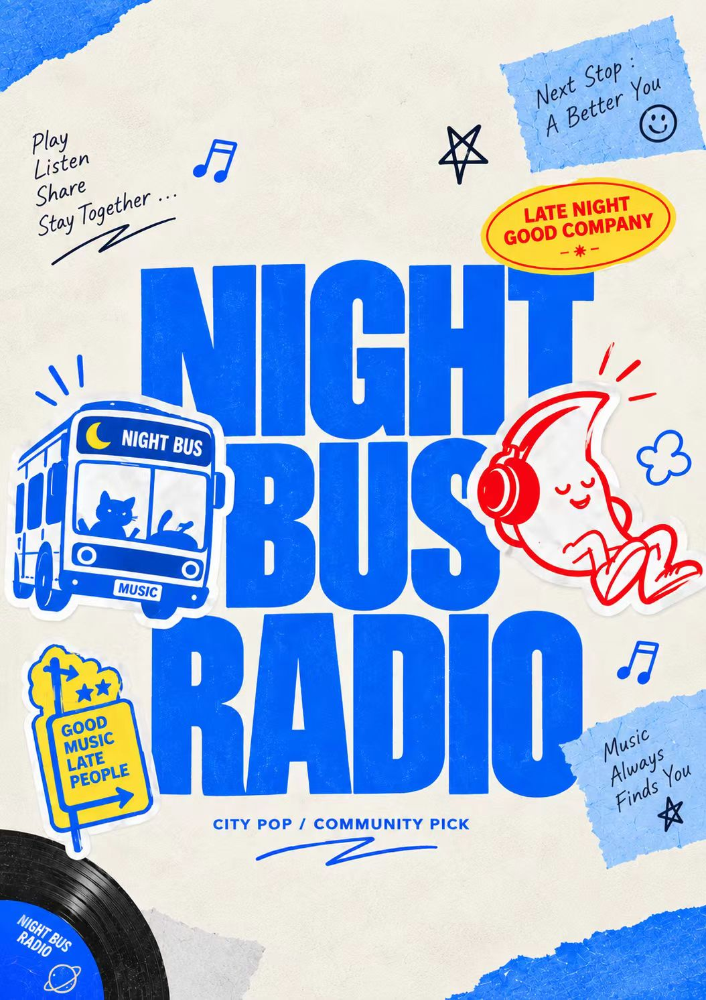

末班车电台
旧磁带 City Pop 加一层雨声。第一条贝斯轨已开放，欢迎继续改编。
音乐积木结构8 BEATS · 21 BLOCKS
MELODY
HARMONY
RHYTHM
MUSICBLOCK / COMMUNITY
试听作品、查看积木结构，然后 Fork 成你的版本。
EDITOR'S PICK

旧磁带 City Pop 加一层雨声。第一条贝斯轨已开放，欢迎继续改编。
COMMUNITY TRACKS
没有找到对应作品。换个关键词或筛选试试。
PLAYER DIARY